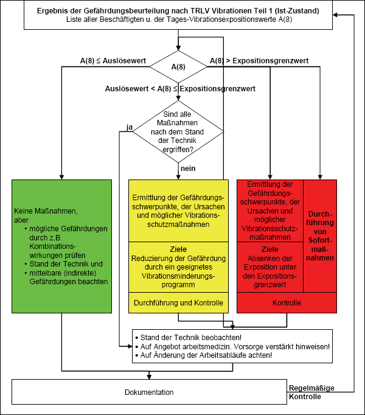

Ausgangspunkt sind die in der Gefährdungsbeurteilung identifizierten Hauptvibrationsquellen und die von ihnen ausgehende Belastung (TRLV Vibrationen, Teil 1 „Beurteilung der Gefährdung durch Vibrationen“). Abbildung 1 beinhaltet ein Ablaufschema aller folgenden Schritte und die Tabelle 1 in der Anlage des Dokuments enthält einige Fragen, die in diesem Zusammenhang wichtig sind. In Abhängigkeit vom Tages-Vibrationsexpositionswert A(8) sind folgende drei Fälle nach dem Ampelmodell zu unterscheiden.

Abb. 1 Ablaufplan zur Auswahl und Durchführung von Schutzmaßnahmen
Falls Expositionsgrenzwerte überschritten werden, müssen unverzüglich Sofortmaßnahmen ergriffen werden. Eine genaue Ursachenermittlung (Abschnitt 3.2) und die weitere Planung von Schutzmaßnahmen (Abschnitt 3.3) erfolgen parallel dazu. Es ist eine Kontrolle nötig, ob das Ziel erreicht wird, die Exposition unter den Expositionsgrenzwert abzusenken.
(1) Befindet sich der Tages-Vibrationsexpositionswert A(8) zwischen den Auslöse- und Expositionsgrenzwerten, wird aus den zusammengetragenen möglichen Vibrationsschutzmaßnahmen ein schlüssiger Plan entworfen – das so genannte Vibrationsminderungsprogramm (Abschnitt 3.5). Darin sind zweckmäßigerweise Verantwortlichkeiten und Termine festzulegen und zu dokumentieren. Es umfasst alle betrieblichen Maßnahmen, die zur Vermeidung oder Verringerung der Gefährdung durch Vibrationen getroffen werden.
(2) Falls alle Schutzmaßnahmen nach dem Stand der Technik ergriffen worden sind, müssen keine weiteren Maßnahmen getroffen werden. Sollten Beschäftigte aber auf Dauer in diesem Bereich Vibrationen ausgesetzt sein, sind Gefährdungen wahrscheinlich und es wird so verfahren, wie im Abschnitt 3.5.2 beschrieben.
Falls der Tages-Vibrationsexpositionswert A(8) die Auslösewerte unterschreitet, werden Maßnahmen nach der LärmVibrationsArbSchV nur in zwei Fällen ergriffen:
§ 4 ArbSchG bleibt hiervon unberührt.
(1) In allen Fällen, in denen die Beurteilung der Vibrationsexposition ergeben hat, dass Schutzmaßnahmen zu ergreifen sind, wird zunächst eine Liste der Expositionsabschnitte nach Art, Ausmaß und Dauer der Vibrationsexposition erstellt.
(2) Dann wird eine weitere Liste von möglichen Schutzmaßnahmen aufgestellt (Tabelle 4 der Anlage).
(3) In einem weiteren Schritt werden je nach Höhe der Exposition Ziele für Schutzmaßnahmen formuliert (Abschnitt 3.3.1). Um diese zu erreichen, werden geeignete Maßnahmen ausgewählt und in die Zielvorgaben aufgenommen. Die Maßnahmen werden mit Terminen und Verantwortlichkeiten versehen und dokumentiert, später dann ihr Erfolg kontrolliert.
(4) Danach ist eine Überprüfung der Schutzmaßnahmen bei Änderungen des Arbeitsablaufs nötig, etwa wenn
(1) Die Analyse der Ursachen und Auswirkungen von Vibrationen baut auf der Gefährdungsbeurteilung auf. Die tägliche Exposition lässt sich meist in Expositionsabschnitte mit unterschiedlicher Gefährdung unterteilen. Diese Teilexpositionen entstehen durch die Benutzung unterschiedlicher Geräte oder durch unterschiedliche Einsatzbedingungen und Belastungszustände. Anhand einer Liste der Expositionsabschnitte (Teilexpositionen) lassen sich die Gefährdungsschwerpunkte nach Art, Ausmaß und Dauer erkennen, wenn diese nach ihrem Anteil an der Gesamtexposition geordnet werden.
(2) Wenn die Gefährdungsschwerpunkte bekannt sind, werden in einem nächsten Schritt bereits eingeleitete sowie weitere mögliche Schutzmaßnahmen aufgelistet. In den Tabellen 2 und 3 der Anlage sind beispielhaft Fragen aufgeführt, die auf Ursachen von Vibrationsbelastungen abzielen, zusammen mit Beispielen für entsprechende Schutzmaßnahmen. Die Maßnahmen werden daraufhin überprüft,
(3) Ein Muster für die Liste der möglichen Schutzmaßnahmen befindet sich in Tabelle 4 der Anlage. Die Antworten auf diese Fragen werden je nach Arbeitsbedingungen unterschiedlich ausfallen.
Beide Aufstellungen bilden die Grundlage der folgenden Schritte.
Zur Formulierung des Ziels der Vibrationsschutzmaßnahmen und ihrer Durchführung enthält Tabelle 1 der Anlage einen Fragenkatalog, der diese Schritte unterstützt.
(1) Die LärmVibrationsArbSchV sieht je nach Höhe der Exposition die folgenden Ziele für Vibrationsschutzmaßnahmen vor:
(2) Bei der Festlegung der Ziele kommt dem Stand der Technik eine besondere Bedeutung zu. Maßnahmen zur Minderung der Gefährdung durch Vibrationen enthalten beispielhaft die Tabellen 2 und 3 der Anlage.
(1) Wenn die Ziele formuliert sind, werden anhand der Liste der Gefährdungsschwerpunkte und der möglichen Schutzmaßnahmen (Tabellen 2 und 3 der Anlage) konkrete Maßnahmen ausgewählt. Für ein Vibrationsminderungsprogramm sind diese zweckmäßigerweise mit Zeitplänen für ihre Durchführung und Kontrolle zu versehen (Abschnitt 3.3.3 und Tabelle 4 der Anlage).
(2) Bei der Auswahl der Schutzmaßnahmen ist Folgendes zu beachten:
Zeitpläne mit klar benannten Verantwortlichen und Erfolgskriterien, wie für ein Vibrationsminderungsprogramm nach bewährter Praxis üblich, sind auch in allen anderen Fällen zweckmäßig, um die Durchführung der Maßnahmen sicherzustellen. Der Erfolg der Maßnahmen ist zu überprüfen und das Ablaufschema in Abbildung 1 gegebenenfalls noch einmal durchlaufen.
(1) Kann die Arbeitsaufgabe mit verschiedenen Arbeitsmitteln oder Arbeitsverfahren durchgeführt werden, hat das Arbeitsmittel bzw. das Arbeitsverfahren Vorrang, das die geringere Vibrationsbelastung verursacht. Das Ergebnis der Substitutionsprüfung ist in der Dokumentation der Gefährdungsbeurteilung festzuhalten.
(2) Dabei sind nicht nur Art, Ausmaß und tägliche Dauer der Vibrationen zu berücksichtigen, sondern auch die Gesamtdauer der Verwendung des Arbeitsmittels bzw. -verfahrens, das zur Erfüllung der Arbeitsaufgabe erforderlich ist. Eine leistungsärmere Maschine erzeugt beispielsweise bei gleichen Ankopplungskräften zwar einen geringeren Momentanwert, die Gesamtexpositionsdauer steigt jedoch oft so an, dass die Gesamtbelastung höher wird.
(3) Beispiele sind bereits im Abschnitt 4.3 der TRLV Vibrationen, Teil 1 aufgeführt.
(1) Das Vibrationsminderungsprogramm hat das Ziel, die Exposition der Beschäftigten durch Vibrationen soweit zu reduzieren, dass der Stand der Technik erreicht ist oder die Tages-Vibrationsexpositionswerte unterhalb der Auslösewerte liegen. Dabei ist sicherzustellen, dass die Tages-Vibrationsexpositionswerte A(8) nicht die Expositionsgrenzwerte überschreiten.
(2) Es ist möglich, dass Tages-Vibrationsexpositionswerte A(8) auch auf lange Sicht über den Auslösewerten liegen, obwohl alle Schutzmaßnahmen getroffen worden sind. In diesem Fall ist regelmäßig zu überprüfen, ob der Stand der Technik nicht eine Verringerung der Gefährdung ermöglicht. Diese Überprüfung ist mindestens alle zwei Jahre durchzuführen. Im Rahmen der Unterweisung ist in diesen Fällen verstärkt auf das Angebot der arbeitsmedizinischen Vorsorge aufmerksam zu machen.
(3) Anhand der Aufstellungen für die Gefährdungsschwerpunkte und der möglichen Schutzmaßnahmen aus den Tabellen 2 und 3 der Anlage sind anhand der Kriterien in Abschnitt 3.3.2 diejenigen Maßnahmen auszuwählen, die zum Erreichen des Ziels nötig sind.
(4) Das Vibrationsminderungsprogramm enthält zweckmäßigerweise zu jeder ausgewählten Maßnahme einen Zeitplan zur Umsetzung. Darin stehen neben Fristen für die Umsetzung die dafür Verantwortlichen, die Kriterien für Ergebniskontrollen und Kontrolltermine. Es umfasst somit alle betrieblichen Maßnahmen, die zur Vermeidung oder Verringerung der Gefährdung durch Vibrationen getroffen werden.
(5) Wenn die Zielvorgaben Angaben für die Minderung der Tages-Vibrationsexpositionswerte A(8) vorsehen, geschieht die Erfolgskontrolle durch sichere Ermittlung oder durch fachkundige Messungen.
(6) Um den Erfolg des Vibrationsminderungsprogramms zu erhöhen, bindet der Arbeitgeber die Beschäftigten eng in dessen Umsetzung ein.
(7) Wird bei den Wirksamkeitskontrollen festgestellt, dass die angestrebten Ziele nicht erreicht worden sind, werden weitere Schutzmaßnahmen in das Vibrationsminderungsprogramm aufgenommen. Dabei ist die Ermittlung der Gefährdungsschwerpunkte und unter Umständen auch die Gefährdungsbeurteilung an die geänderten Bedingungen anzupassen.
Persönliche Schutzausrüstungen sind in der Rangfolge das letzte Mittel, das als Schutz gegen Gefährdungen am Arbeitsplatz eingesetzt werden kann, und soll nur dann als langfristige Schutzmaßnahme in Erwägung gezogen werden, wenn alle anderen Möglichkeiten ausgeschöpft worden sind.
(1) Vibrations-Schutzhandschuhe, die auch mit der Bezeichnung "Antivibrations-Schutzhandschuhe" verkauft werden, tragen das CE-Kennzeichen. Das sind z. B. Handschuhe, die die Anforderungen der DIN EN ISO 10819:2013-12 erfüllen.
(2) Die o. g. Prüfnorm gestattet keine Aussagen über die Reduzierung der Gefährdung bei der Verwendung in der Praxis. Daher sind die Schutzeigenschaften der Vibrations-Schutzhandschuhe gemäß § 2 Absatz 1 der PSA-Benutzungsverordnung (PSA-BV) separat zu beurteilen.
(3) Bei Frequenzen unterhalb von 150 Hz (9000 U/min.) bieten Vibrations-Schutzhandschuhe keine signifikante Risikoverringerung. Für die meisten kraftbetriebenen Handwerkzeuge bedeutet dies, dass die Reduzierung der frequenzbewerteten Beschleunigung durch Vibrations-Schutzhandschuhe vernachlässigt werden kann. Bei Werkzeugen, die mit hohen Drehzahlen arbeiten (oder Vibrationen in hohen Frequenzen produzieren) und mit einem nicht zu festen Griff gehalten werden, kann mit Vibrations-Schutzhandschuhen eventuell eine gewisse Verringerung der Vibrationsgefährdung erzielt werden. Als alleinige Schutzmaßnahme bei Hand-Arm-Vibrationen reichen Vibrations-Schutzhandschuhe nicht aus.
In bisher durchgeführten Untersuchungen konnte keine Vibrationsminderung für übliche Vibrationen am Arbeitsplatz durch Schuhunterbau und Schuhsohle festgestellt werden. Die Prüfstelle für Schutzschuhe bestätigt nur die "schockabsorbierende" Wirkung der Absätze.
(1) Eine niedrige Körpertemperatur erhöht das Risiko von kalten und steifen Fingern sowie allgemeiner Unterkühlung, verbunden mit einer höheren muskulären Steifigkeit aufgrund geringerer Durchblutung. Bei kalter und feuchter Witterung mindert bei Arbeiten im Freien eine wärmende und vor Nässe schützende Kleidung die Auskühlung. Handschuhe und weitere Kleidungsstücke sind auf ihren Sitz und ihre Wirksamkeit, den Körper und die Hände in der Arbeitsumgebung warm und trocken zu halten, zu prüfen.
(2) Bei Temperaturen von mindestens 17 °C an Arbeitsplätzen in Arbeitsräumen ist im Allgemeinen keine Spezialkleidung erforderlich. Es gilt, Maschinen zu vermeiden, die die Hände frieren lassen, z. B. Maschinen mit Stahlgehäuse oder pneumatische Werkzeuge, deren Abluft über die Hände des Bedieners streicht. Für Arbeiten im Freien gibt es Maschinen, so u. a. Kettensägen, mit heizbaren Griffen für warme Hände.